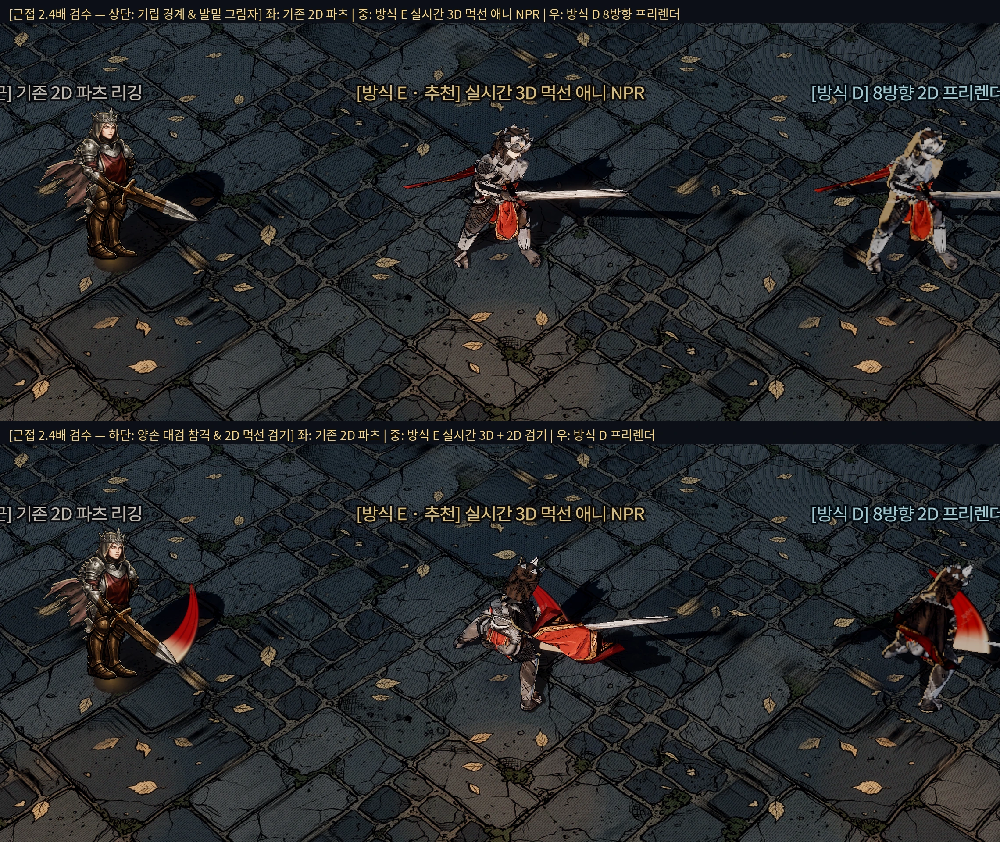
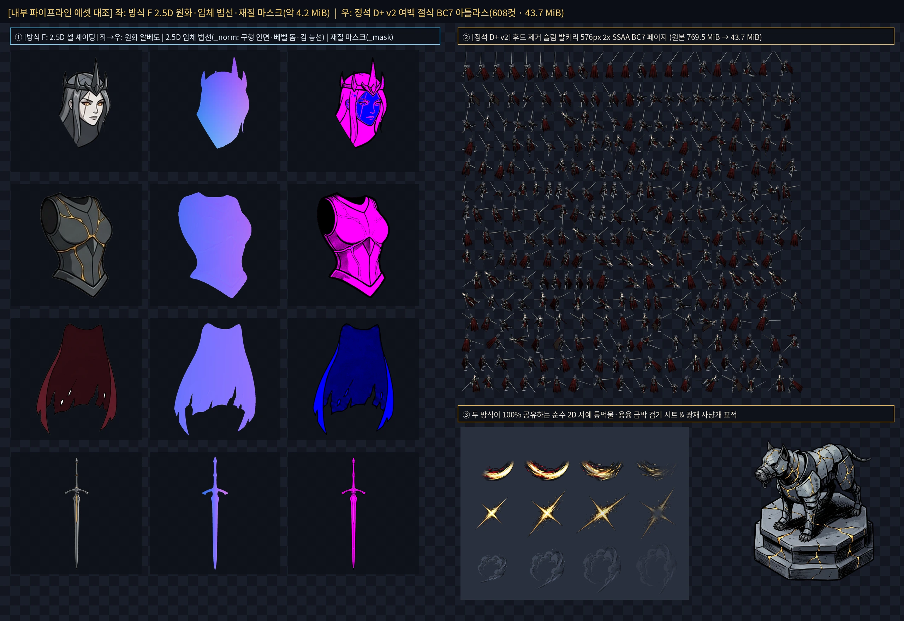

하운즈 오브 애버리스 — 캐릭터 애니메이션 파이프라인 격리 검증 (방식 E vs 방식 D)
본 빌드는 본편 게임(v5.2.3)을 0바이트도 건드리지 않고 격리 씬(
res://lookdev/char_pipeline_spike.tscn)에서 세라핀 1종 × 6대 모션(대기·달리기·참격·회피·피격·사망) × 8방향(360°) 구동 구조만 비교 검증하기 위한 전용 테스트 설치파일입니다. 디렉터 확정 승인 전까지 몬스터·군주·야영지 NPC 대량 전환 및 세부 얼굴/장식 고밀도 폴리싱은 보류되어 있습니다.
SHA-256: 506407f5114357a6d27141838d6acc84d5709dca3388749e911ce46cd72ff829 (미서명 인디 테스트 빌드이므로 SmartScreen 창 노출 시 [추가 정보] → [실행] 선택)
인게임 조작: 마우스 좌클릭/드래그(360° 이동·방향 전환) · Q(양손 대검 참격 + 2D 먹선 검기) · Space(전술 회피) · W(피격 반응) · E(사망/복귀) · 상단 버튼으로 [3자 동시 비교 / 방식 E 단독 / 방식 D 단독 / 14fps·60fps 작화 전환] 즉시 비교 가능.
1. 인게임 2K(2560×1440 · 23.5m 실전 배율) 3자 동시 비교
좌: 기존 2D 파츠 리깅(대조군) vs 중: 방식 E (실시간 3D 골격 + 2D 먹선 애니 NPR · 14fps On-Twos) vs 우: 방식 D (8방향×10프레임 프리렌더 스프라이트 + 3D 그림자)

2. 근접 2.4배 검수 — 양손 대검 파지 · 발밑 3D 입체 그림자 · 2D 먹선 검기
상단: 기립 경계 자세 및 실제 인체·망토·대검 부피에서 뻗어 나오는 입체 그림자 | 하단: 상체 82° 코일링 대검 참격 및 2D 작화 초승달 검기

3. [방식 E] 8방향(360°) 입체 회전 원근 단축 컨택트 시트
옆모습 좌우 반전(flip_h) 눈속임 없이 남(S)~남서(SW) 전 방향에서 등판 망토·견갑·철관 투구·양손 대검이 실제 3차원으로 회전

4. [방식 E] 6대 필수 모션 컨택트 시트
대기 · 달리기 A/B · 참격 예비/폭발 · 회피 · 피격 · 사망 — 양손 보조손 자루 오차 4.07cm 이내, 판금 고무 왜곡 0%, 발 접지 유지

5. [방식 D] 사전 렌더링 8방향×10프레임 투명 RGBA 아틀라스 원본 (Attack)
모션당 3200×2560 시트 × 6모션 = 캐릭터 1명·무기 1종당 총 480프레임 (장비 외형 교체 시 조합마다 480프레임 재렌더링 발생)
